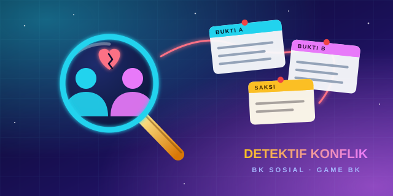

Ada konflik di sekolah dan hanya detektif yang bisa menyelamatkannya. Kumpulkan bukti dari dua sisi cerita, rumuskan kesimpulan, pilih tindakan yang tepat, lalu jaga meteran kepercayaan antarteman.

Tiap kasus dan tiap langkah Sidang Damai dimainkan tim yang berbeda secara bergantian. Skor dihitung per tim, lalu ada peringkat di akhir.